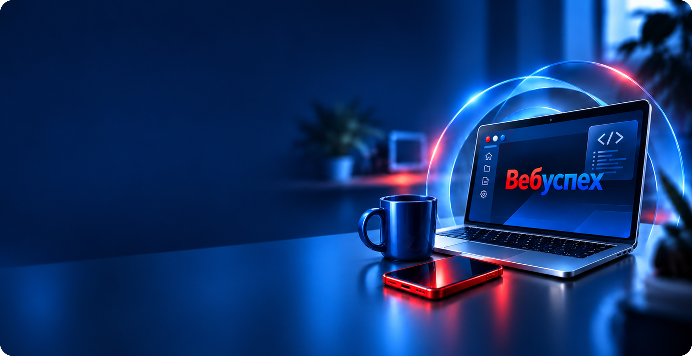
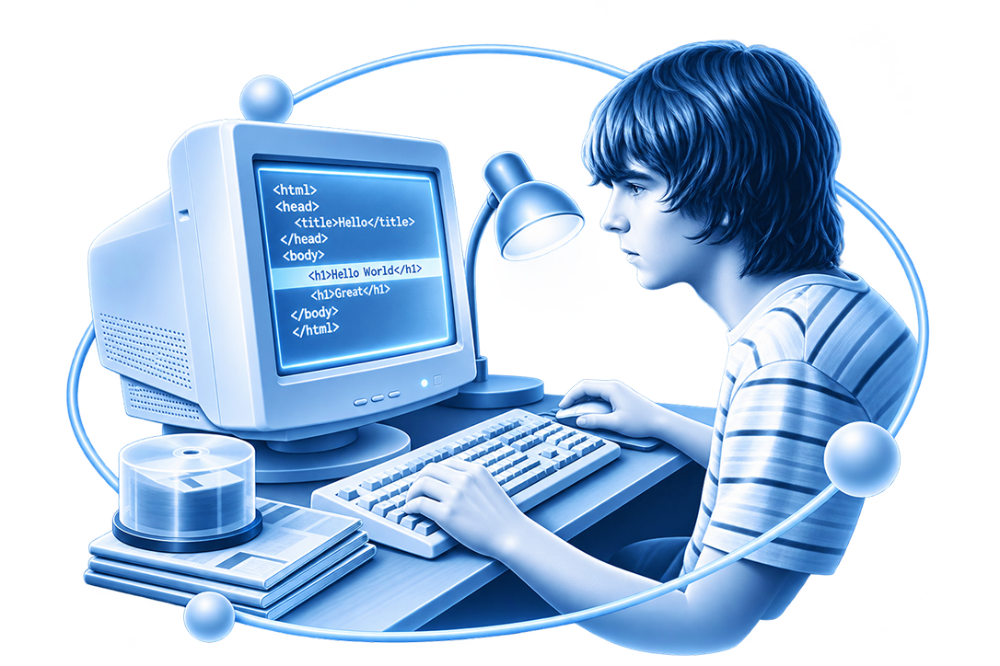
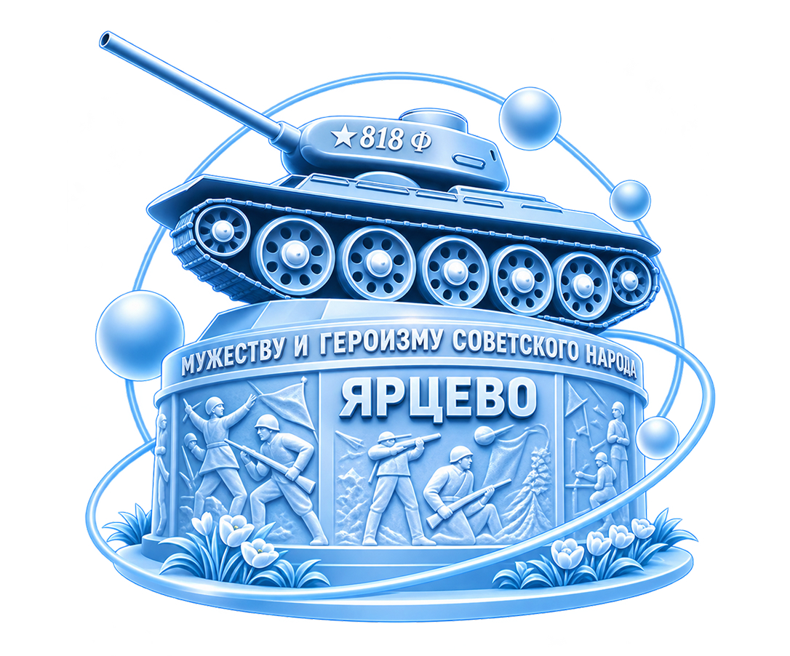
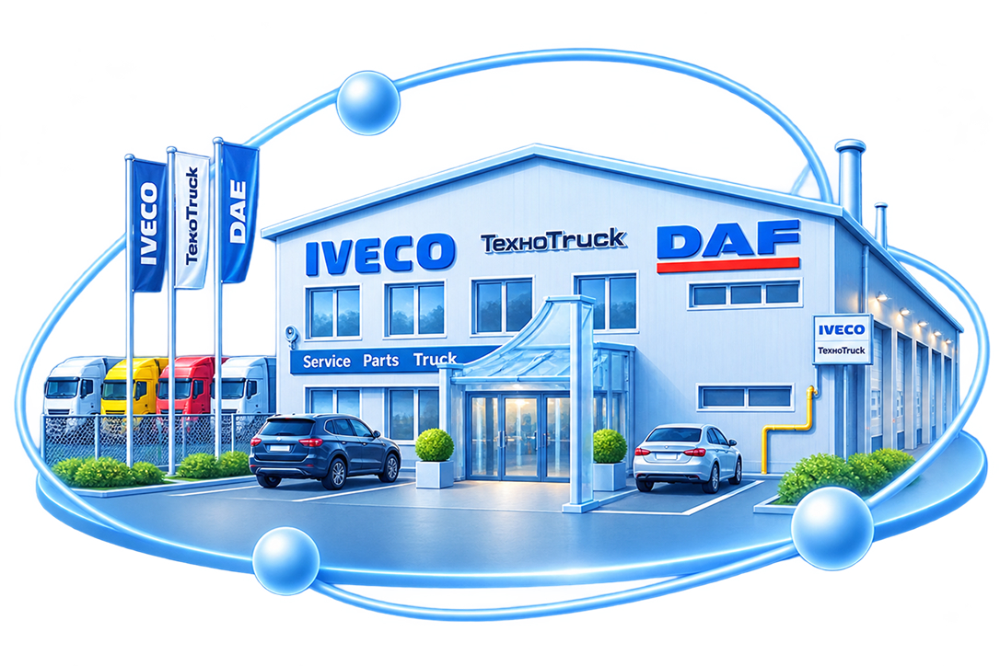
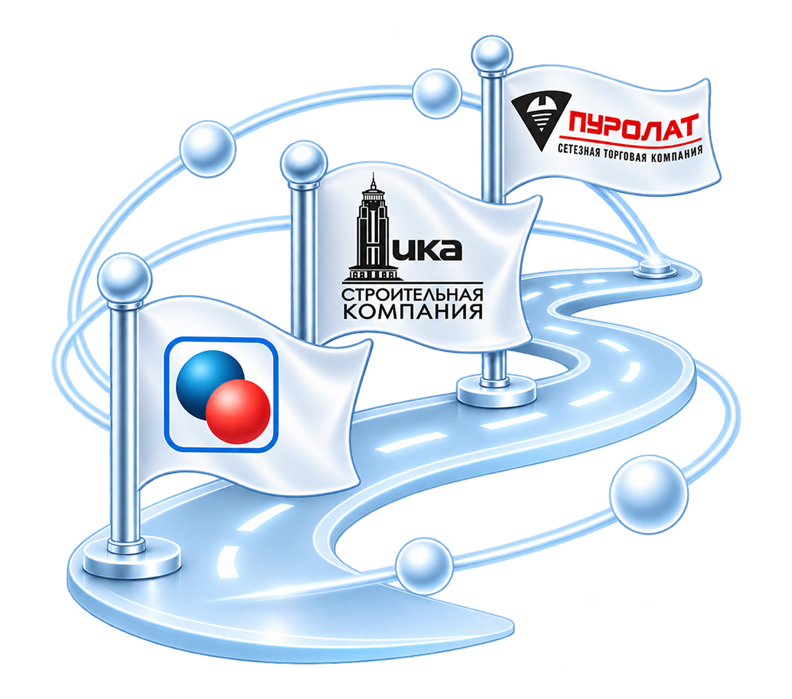
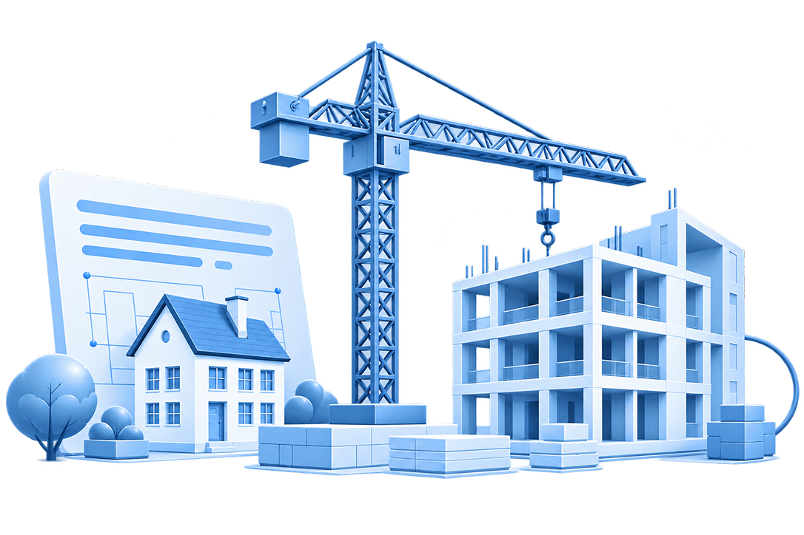
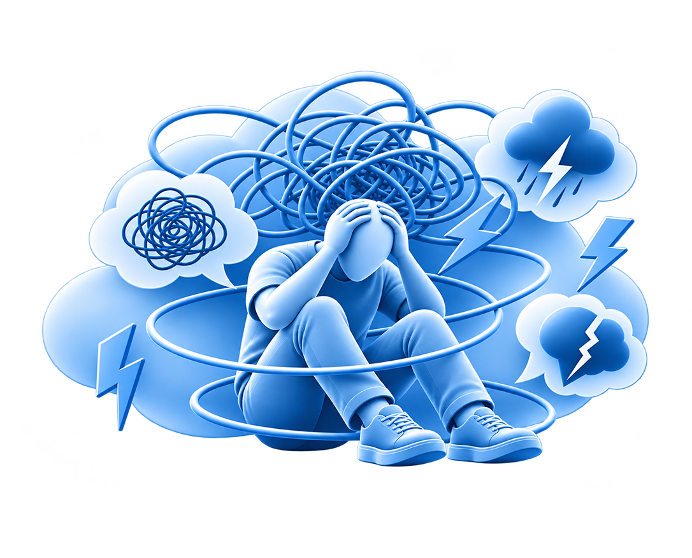
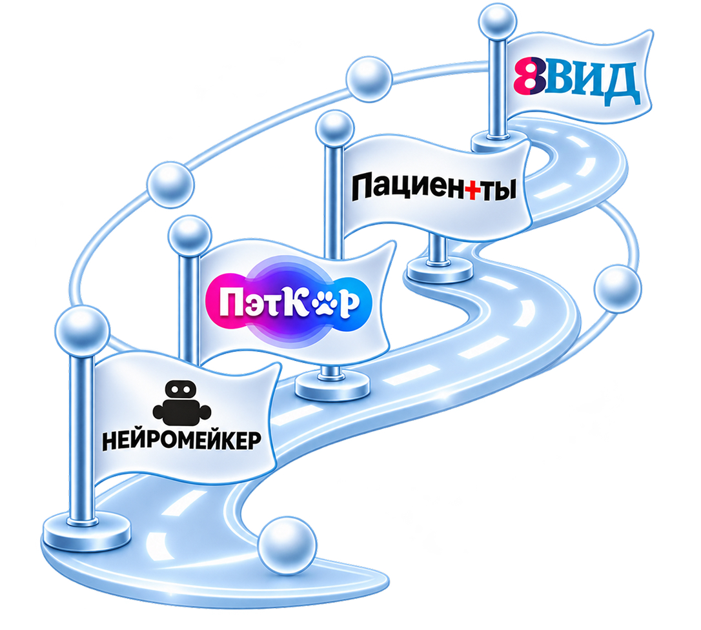
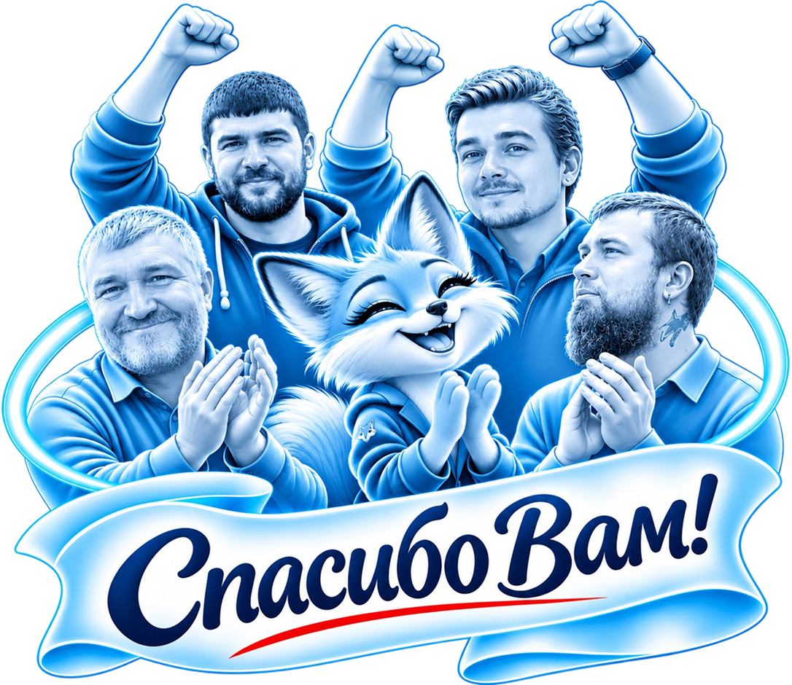
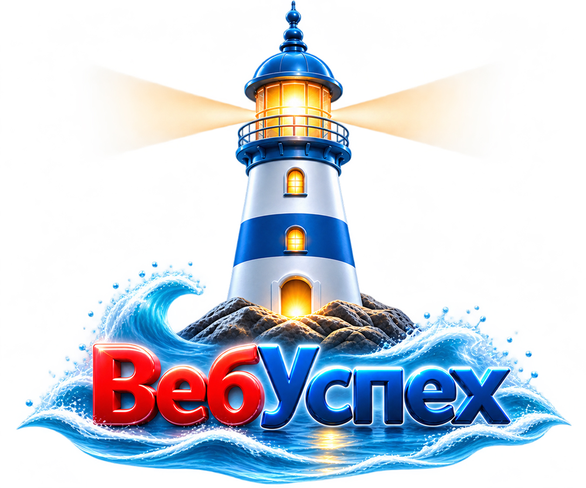

история, написанная не чернилами, а опытом
перед тем, как вы погрузитесь в эту историю. Некоторые даты в тексте могут расходиться с реальными на год-другой память не сервер, бэкапы не делает. Но каждое слово здесь правда. Не бухгалтерская, не протокольная. Живая. Та, что складывается из бессонных ночей, первых рукопожатий, ошибок и упрямой веры в то, что дело стоит того. Мы не просим судить строго. Мы просим просто прочитать как читают историю человека, который шёл, падал, поднимался и снова шёл.

Всё началось задолго до вывески, печати и первого договора. В 2003 году, когда слово «фриланс» в провинции звучало почти как заклинание, один подросток открыл для себя мир, в котором строчки кода превращались в картинки, картинки в сайты, а сайты в живые сообщества людей.
Дизайн. Вёрстка. Программирование. SEO. Каждая ниша становилась отдельной главой, отдельным годом, отдельным погружением с головой. Не было наставников, не было курсов за миллион был монитор, гудящий системный блок и упрямое желание разобраться: а как это работает изнутри?
В 2010 году Бобик Игорь Витальевич завершает обучение
в университете и получает диплом по специальности «Педагог информационных технологий». Казалось бы вот он, документ, подтверждающий право называться специалистом.
Но на деле диплом стал лишь формальностью:
настоящая школа продолжалась каждый день.
Фриланс не закончился он усложнился. Рынок менялся стремительно: новые CMS, фреймворки, мобильные приложения, десктопный софт. Каждая платформа свой характер, свои плюсы, свои сюрпризы. Стандартные сайты перестали быть интересны. Начался поиск нестандартных решений.

Смоленская область, город Ярцево. Открывается компания в сфере ИТ-разработки. Название «Веб Успех». Ни большого офиса, ни штата, ни потока клиентов. Только стол, компьютер и твёрдое решение: строим своё.
Первые месяцы это не романтика стартапов из Кремниевой долины. Это реклама в районных газетах. Это холодные обзвоны. Это ходьба по кабинетам с распечатанным КП и надеждой, что хоть кто-то скажет: «Давайте сотрудничать».

длиной в три года
Три года компания работала в ноль. Не в убыток в ноль. Каждый заработанный рубль уходил обратно в дело: в инструменты, в обучение, в исправление собственных ошибок. Не было прибыли. Был опыт дорогой, болезненный, но бесценный.
Именно тогда пришлось впервые погрузиться в бухгалтерию. Не потому что хотелось, а потому что лишних денег на бухгалтера просто не было.
Когда дело наконец передали профессионалу, полгода пришлось слушать: «Мама не горюй, что вы тут натворили». К счастью, для ИТ-компаний государство предусмотрело поблажки. Удалось всё выправить, выдохнуть и двигаться дальше.

и первые CRM
Наконец-то рост. Небольшой, осторожный, но настоящий. Компания начинает разрабатывать полноценные CRM-системы. Уже не просто «сайт-визитка», а инструменты, которые меняют то, как работает бизнес клиента. Медленно, уверенно, без громких обещаний.
Очередной спад в обороте. Но вместо паники решение: выходить за пределы Ярцево. Первый опыт Смоленск. Именно тогда сформировалась модель, которая стала частью ДНК компании: бартер. «Мы вам ресурс и поддержку вы нам рекламу». Сарафанное радио, живые рекомендации, взаимовыручка. Не жалко делиться опытом. Не жалко делать добро.
За всё время существования «Веб Успех» реализовал не один благотворительный проект полностью безвозмездно в сфере патриотических, благотворительных и других подобных ресурсов. Не ради пиара. Потому что когда тебе это по душе, когда каждое новое открытие вдохновляет финансовая цель перестает быть единственной.

Крупный проект для строительной компании. Задача не просто «сделать программу», а оптимизировать процессы, перестроить логику работы, ускорить то, что годами тормозило.
Именно на этом проекте произошла одна из тех встреч, которые меняют траекторию. Заказчик стал другом, товарищем, партнёром, с которым компания идёт бок о бок по сей день.
Это не исключение это закономерность. В «Веб Успех» заказчики часто перестают быть строкой в договоре. Становятся людьми, с которыми общаешься, споришь, шутишь, созваниваешься не по делу. Бывшие клиенты превращаются в тех, кто ближе, чем некоторые знакомые с детства. И это, пожалуй, самая тёплая часть всей истории.
Новый клиент сеть медицинских клиник. И вместе с ним совершенно новый масштаб. Реклама на тв, реклама на радио. Выход из онлайн-мира в офлайн. Разработка и внедрение МИС на базе 1С от первичной заявки пациента до приёма у врача. Первые навыки работы с 1С. Границы снова расширились. И снова заказчик становится товарищем. Снова не просто договор, а живое человеческое взаимодействие.

Бывает так: рассчитываешь на одно, а получаешь обесценивание собственного труда. Не скандал, не конфликт просто чья-то недальновидность, из-за которой месяцы работы вдруг кажутся ненужными.
В такие моменты хочется опустить руки. Но в «Веб Успех» всегда придерживались одного принципа: искать причину в себе, а не вешать ярлыки на других. Лечить себя изнутри, а не ставить диагнозы миру. Компания продолжила работать пусть и не на полную мощность. Кризисный режим. Но не остановка.
Но ни одна из них не осталась без компенсации. Справедливость не пункт в договоре, это принцип.
Рынок перестал быть локальным. Заказчики со всей России. Клиенты из Израиля и других стран причём знакомства, завязавшиеся годами ранее, переросли в тёплое общение далеко за пределами рабочих задач.
Один из запоминающихся опытов проект, связанный с онкологической тематикой. Ресурс, который помогал людям в один из самых тяжелых периодов жизни. Точный год этой истории уже стерся из памяти, но её смысл нет.
К этому моменту в компании четко оформилось правило: бухгалтер и юрист не роскошь, а фундамент. Они берегут нервы, защищают в договорах и следят за тем, чтобы в любом сотрудничестве торжествовала справедливость.
Кстати, факт, которым в «Веб Успех» гордятся особенно: за всё время существования компания не участвовала ни в одном судебном разбирательстве. Ни одного. И это не случайность. Это результат прямоты, честности и готовности компенсировать любую просрочку дополнительными работами сверх договора.

не стыдно делать любую работу, если она ведёт к цели.
Наконец-то зарегистрирован товарный знак «Веб Успех». Параллельно компания развивает собственные стартапы. Один из них Пэткор. Идей всегда было много, и все они требовали вложений: заработанное уходило в разработку, а на полноценный запуск не хватало. Инвесторы? «Есть деньги подумаю. Нет денег и нечего пощупать неинтересно». Знакомая история для любого, кто пытался поднять стартап в наших широтах.
А ещё в 2025 году произошло то, чего никто не ожидал. Игорь Витальевич человек, который с 2003 года строит цифровые продукты, взял в руки стопку бумажных листовок и пошёл на московские фестивали животных, раздавать. Вручную. Каждому владельцу. Как студент на первом курсе, которому нужны были хоть какие-то деньги.
За день около 300 живых разговоров. К вечеру язык заплетался, ноги гудели, ощущение как у выжатого лимона. Но первая аудитория для Пэткора была собрана. Живая. Тёплая. Настоящая.

Пэткор получает собственную регистрацию товарного знака. Развиваются боты в Telegram и на других платформах. Ведётся разработка программного обеспечения под Астра Линукс.
Развивается веб-ресурс. Проект перевалил за 1000 пользователей.
На подходе Нейромейкер.
В разработке приложение для детей с особенностями развития, которое в будущем может вырасти в полноценную социальную сеть. Восемь направлений. Восемь идей, каждая из которых ждёт своего часа.
Параллельно компания глубоко погружается в изучение LLM-моделей и блокчейн-технологий, не ради хайпа, а ради понимания, куда движется мир и как быть в нём полезными.

Не сразу. Не без потерь. Но возьмёт.
Рынок штормит.
Из каждого утюга: «ИИ заменит всех. Вайбкодеры захватят индустрию. Ставьте крест на профессии».
Мы скажем прямо: это неправда.
Да, мир трансформируется. Да, исчезнут некоторые профессии как когда-то исчезли телефонистки и кондукторы. Беспилотные автомобили заберут работу у таксистов. Роботы у курьеров. Автоматизация у кассиров и множество других структур. И да, будет грустно. Будет страшно. Будет непонятно, что дальше.
Но есть то, что не заберёт ни один алгоритм. Критическое мышление. Способность видеть контекст, чувствовать задачу, понимать человека по ту сторону экрана. Ни одна матрица знаний не заменит живого опыта, интуиции и того самого «а что если?», с которого всё начиналось в 2003 году.
Поэтому мы говорим всем, кто сейчас чувствует растерянность: не ставьте на себе крест. Адаптируйтесь. Используйте опыт, который у вас уже есть. Возьмите те инструменты, на которые раньше не хватало времени. Мир не закончился он переформатировался. А вы многогранны. И это сильнее любого кода.
Мы сами не опускаем рук.
Идём дальше.
Эта история была бы невозможна без людей.
Спасибо тем, кто из заказчика стал другом. Тем, кто терпел наши просрочки и прямоту. Тем, кто не сорвался, когда было тяжело. Сотрудникам, которые выручали в проектах, когда, казалось, всё горит. Близким, которые верили, даже когда мы сами сомневались. Бухгалтерам и юристам, которые держали тыл. Каждому клиенту и первому из районной газеты, и тому, кто пришёл по рекомендации.
Спасибо тем, кто рядом сейчас. Тем, кто был рядом раньше.
И тем, кого уже нет с нами, но чей след остался в каждом нашем решении.
С верой в людей и в то, что они делают.
И да: если даты в этой истории где-то сбились на год простите. Память не идеальна. А вот история настоящая.